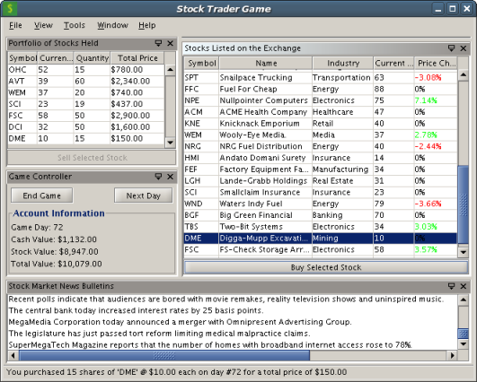

|
Tom Wheeler |
| Related info on Tom:
Tom's Articles: Note: Tom's articles were written for NetBeans IDE 4.1, before comprehensive plug-in module development support was available. Now, in NetBeans IDE 5.0, the development approach you would take is very different. (As described in tutorials, you now start developing modules by using wizards and templates.) However, the conceptual information provided by Tom is still applicable to NetBeans IDE 5.0. |
NetBeans interviewed Tom Wheeler, who is a Senior Software Engineer for Object Computing, Incorporated (OCI), which is based near St. Louis, Missouri in the midwestern United States.
Well, OCI is probably most widely recognized for its training, development and support for open source CORBA tools like TAO and JacORB, but the company also has broader consulting and training services that focus on design and development for object-oriented and distributed computing.
I've been doing a combination of progamming and training for about ten years. Most of this time has been spent on Web development, UNIX/Linux systems management and distributed computing, but I've been doing a whole lot more Swing lately. I've used at least half a dozen languages though Java accounts for 80% of the code I've written since 1999.
My current consulting assignment is in the engineering department of a large company. Like others, they have a number of custom applications that were developed to accomplish a single task. Since they were each created independently of one another, there's some overlap between them and they don't necessarily work well together. As a result, the engineers wind up spending time converting data between different formats and switching from one tool to the next.
My project aims to consolidate these disparate programs into a more unified tool by making each of them a module within a larger framework. Of course, one of the most obvious benefits is that it will make the engineers more productive, but it will also reduce long-term development costs. Maintenance costs will be decreased since there will be a lot less duplication of code, and new features will take less time to develop because they'll be delivered as a module that plugs into the framework. They won't have to write all the standard code that goes into a new monolithic application.
When I started working on this project, I came up with a list of more than twenty specific features that the framework would need to support. I then examined the available frameworks to see how well they matched these criteria and a colleague suggested that I add the NetBeans Platform to my candidate list. I'm glad I did because it had more of the features we needed than any of the others.
A lot of them were related to the modular development approach I mentioned earlier. One of the most important was that we wanted to be able to add or update modules without redistributing the entire application. We also wanted to know that the installed set of modules worked properly together, and that meant we needed version and dependency management. I've had to write that sort of code in the past and know how hard it is to handle updates smoothly, so I wasn't looking forward to having to implement it again. Luckily, I didn't have to because the NetBeans Platform provided it for me.
The company had a pretty heterogenous computing environment, so they've been doing Java development for years. The existing tools were already in production and we didn't want to modify them any more than necessary. We knew we'd be able to reuse existing Java code and run it on any computer because the NetBeans Platform is pure Java.
I got started just after NetBeans IDE 4.0 was released and, in all honesty, I found it difficult at first. There were very few tutorials available back then and most of those were based on NetBeans IDE 3.x. It was kind of ironic that many of the same changes that made NetBeans IDE 4.0 a better development platform made it harder for new developers because they rendered older examples obsolete.
Well, first I tried to find as much documentation as I could. As I said, there was very little available in the form of tutorials, but the API documentation helped a lot. I also started looking at how the NetBeans IDE worked and studying the source code behind it. But what probably helped me most was the NetBeans community. The problems I had weren't usually unique and I was able to answer a lot of my questions by searching the mailing list archives. When I still wasn't able to find what I needed, I posted to the mailing list and usually got several helpful responses.
It would be so much easier to get started developing with the NetBeans Platform now. In addition to the Javadoc, IDE source code and mailing lists, there are now a lot of tutorials on the NetBeans Web site and developer's blogs. NetBeans IDE 5.0 also has support for building platform-based applications and that makes it simple to generate much of the code you'd need to write.
Well, a few months ago, I needed to add support for a custom file type to my application built on the NetBeans Platform. I needed to be able to load and save it, as well as view and edit its information. Unlike most of the examples in the IDE source code tree, it was not a text file that could normally be opened in the Source Editor.
So, I created an example based on what I did so that others might be able to learn from it. It edits files that represent information about a dog, such as the name, age and breed. It also makes use of the excellent JGoodies Data Binding framework, which I have packaged with it. You can download the DogFile support module and JGoodies Data Binding module packaged as a suite for NetBeans 5.0 RC2, by going to Tom Wheeler's NetBeans Site. (On my site, there's also an example of using the NetBeans System Option class, although I realize that this class is quite contentious and NetBeans developers are considering replacing it, which is why there's no tutorial on this subject.)
Since the problems I had getting started are still relatively fresh in my mind, my main goal has been to make it easier for new developers to get started by documenting the things I wish I'd known at first.
I work with a lot of really talented people at OCI and they're as passionate about technology as I am. Each month one of us volunteers for the Java News Brief in which we write about a Java-related topic that we find interesting. Last September, I wrote one that introduced the NetBeans Platform, explained its advantages and disadvantages, and concluded by showing exactly how to build an image viewer application from existing code. I think that helped expose a lot of new people to the NetBeans Platform because I started getting e-mail from developers all over the world who thanked me for writing it.
I followed up the first article with another that illustrated how to create several modules that work together to form a stock trading game. Here's a screenshot:

(By the way, I recently put a copy of the source code for the stock trader game as a NetBeans IDE 5.0 project on my webpage. I need to leave the NetBeans IDE 4.0 version there, but hopefully the new one might dissuade new people from using it!)
I also gave some advice for porting existing Swing code to NetBeans Platform applications based on my own experience.
In addition to the articles, I have also tried to help out by answering questions on the developer mailing list and updating the NetBeans Developer FAQ.
I plan to keep doing the things I listed above, but I'd also like to update and expand the stock trader game from my second article. I think that in addition to being a good example to learn from, it could also be a pretty fun game. On a related note, I also find technical analysis pretty interesting, so I might also get involved with the Humai Trader Platform Project if I can find the time.
The new tutorials that have been published on the NetBeans Web site have been a tremendous help, but I'd like to see more open source applications based on the platform so I can learn from how they work. The Web site lists a number of applications already, but most of the open source ones are outdated. I'm sure that there are some out there, so perhaps it's just a matter of rounding them up and updating that page.
I first used NetBeans IDE 5.0 just before the first beta came out and I keep finding myself using it more and more. In addition to the wizards for creating platform applications I mentioned earlier, the Matisse GUI builder has also saved me a lot of time. I also look forward to trying out the Profiler and NetBeans IDE 5.0's built-in support for JSP files, EJB components, and Web Services.
For information about creating and developing plug-in modules and rich-client applications, see the following resources: